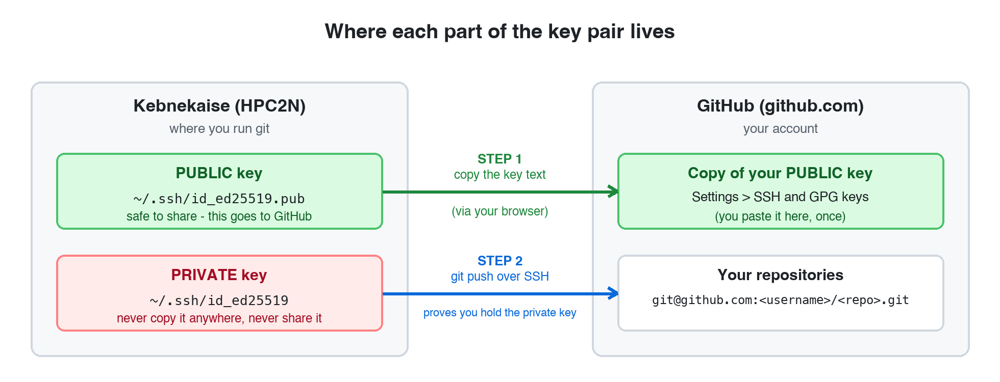
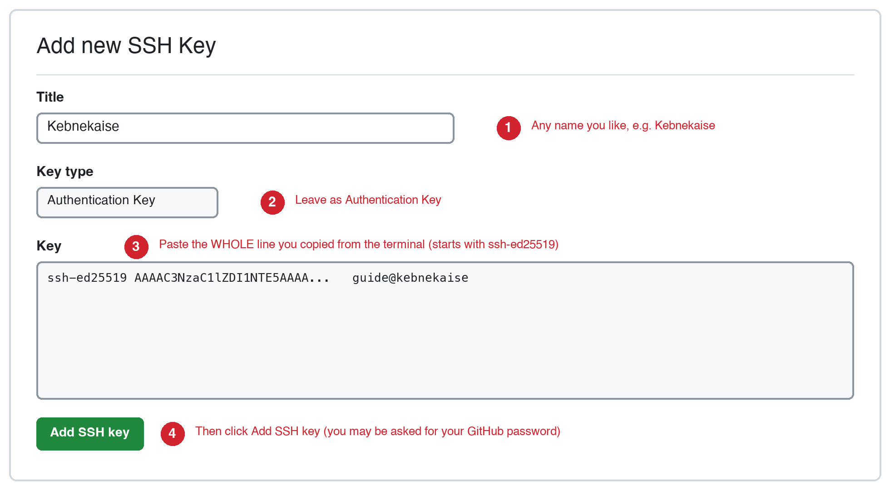
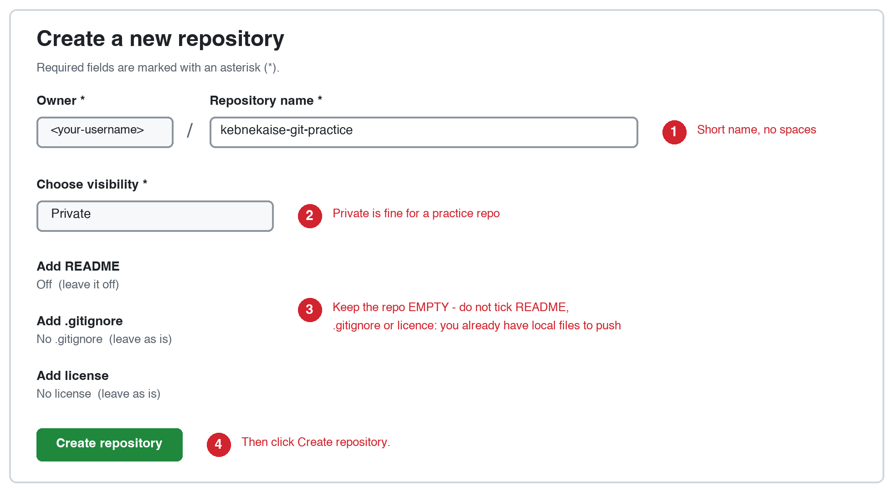

Pushing to GitHub from Kebnekaise: step-by-step guide¶
Course: 5BI00A Computing for Data-Driven Biology · Umeå University
The exam requires you to push your work from Kebnekaise to a repository on GitHub. This page is a short, linear recipe for getting that to work. It replaces nothing in the Git lecture; it just puts the steps that matter for the exam in one place, in the order you need them. Expect it to take about 20 minutes the first time.
The one thing that trips most people up
The SSH key must be created on Kebnekaise, not on your own computer. When you type git push on Kebnekaise, it is Kebnekaise that has to prove who you are to GitHub. A key sitting on your laptop is invisible to Git on Kebnekaise.
What you need before you start¶
- A GitHub account (free), with two-factor authentication set up. Sign up at github.com.
- Your HPC2N account and a terminal on a Kebnekaise login node (see Connecting to Kebnekaise): an SSH terminal on your own computer, for example PuTTY, or ThinLinc. The terminal inside Open OnDemand runs on a compute node, and some compute nodes lack tools that this guide uses, such as
gitandssh-keygen. Every command on this page is typed in the Kebnekaise terminal, except the two steps marked as done in the browser. - The commands are shown without the
$prompt: type or paste only the command itself.
Using the practice container instead of Kebnekaise?
If you are working in the practice Docker image, do not follow Steps 1 to 5 by hand. Type exam-practice-setup at the [practice container] prompt: it does Steps 1 to 5 for you and asks for your name and e-mail address. The practice image guide explains how to start the container. Then continue at Step 6. Every command on this page is typed inside the container, never in your own computer’s terminal.
How the commands on this page are shown¶
Three kinds of block are used, and they always look the same.
Paste-as-it-is commands are in a plain grey block. Copy the whole block and paste it. Nothing in it needs changing:
Edit before you paste
A command that contains something only you know is in an orange box like this one. The words in CAPITAL LETTERS are placeholders. Replace each one with your own text, and keep everything else, including the quotation marks. The box tells you what each placeholder means.
MY NAME: your own name, for exampleMaria Svensson.
What you should see (do not paste this)
Output that the computer prints back is in a green box like this one. It is there for you to compare with your screen. It is not a command, so do not paste it.
Paste one block at a time, press Enter, and wait for the prompt to come back before you paste the next block.
Use straight quotation marks
Commands use straight quotation marks, " and '. If you copy a command from a Word document, an email or a chat window, they can turn into curly ones, “ ” and ‘ ’, and the command then fails with errors that seem unrelated. Copy commands from the boxes on the course pages instead of retyping them, and check any quotation marks that you type yourself. Do not swap one kind for the other: $ and \ mean something different inside double quotes than inside single quotes.
The idea in one picture¶
An SSH key is a pair of files. The private key stays on Kebnekaise and is never shared. The public key is a line of text that you give to GitHub once. Afterwards GitHub can check, every time you push, that you hold the matching private key, and no password is needed.

Note
This key is only for talking to GitHub. It is not what you use to log in to Kebnekaise (that uses Kerberos or your HPC2N password), and adding it to GitHub does not change how you log in.
Before Step 1: check that Git is available on Kebnekaise¶
Git is not installed on every Kebnekaise node. Whether it is there depends on the node you land on, so check it first. Type this in the Kebnekaise terminal:
What you should see if Git is available (do not paste this)
A line that starts with git version. The number can differ.
If Git is missing, load it with the module system. The command needs no changes:
Then check again:
It should now print a line that starts with git version. If module says that it cannot find that module, type module spider git to list the versions that are installed, and load one of them together with the modules that the list says it needs.
The module is loaded only in the terminal where you typed the command. In a new terminal, or after logging in again, load it again before you use Git. You do not need this step in the practice container, which has Git.
Now check that the tool that makes SSH keys is available:
What you should see if it is available (do not paste this)
A line with the location of the tool, starting with /. The exact location can differ.
What you see if it is missing (do not paste this)
Nothing at all is printed, and the prompt comes back. If you type ssh-keygen directly, you get command not found.
If it is missing, you are most likely in a terminal on a compute node, for example the terminal in Open OnDemand, and not on a login node. Type this to see where you are:
A name that starts with b-cn is a compute node. There is no module that provides the missing tool. Log in to a login node instead, with an SSH terminal such as PuTTY (see the SSH page) or with ThinLinc, and check again there.
Step 1: Tell Git who you are (once)¶
The first two commands contain your own details. Change the capital letters before you paste.
Edit before you paste
git config --global user.name "YOUR FULL NAME"
git config --global user.email "YOUR GITHUB EMAIL ADDRESS"
YOUR FULL NAME: your own name, for exampleMaria Svensson.YOUR GITHUB EMAIL ADDRESS: the e-mail address that belongs to your GitHub account, for examplemaria.svensson@example.com. If you are not sure which address that is, open github.com/settings/emails. You can use the privatenoreplyaddress shown there instead.
The next two commands need no changes:
Check what you typed:
What you should see (do not paste this)
Your own name and e-mail address, init.defaultbranch=main and core.editor=nano. There may be other lines as well.
The third setting matters. Without it, a new repository on Kebnekaise starts on a branch called master, while GitHub expects main, and your first push fails (see Troubleshooting). If you skip the first two commands, Git still lets you commit, but it invents an identity from your username and the login node’s name, which is not what you want on your commits.
The last setting chooses nano as the text editor that Git opens, for example when you commit without -m. Without it Git may open vim, which many people find hard to leave. In nano the shortcuts are shown at the bottom of the screen: save with Ctrl+O and then Enter, and leave with Ctrl+X.
Step 2: Create your SSH key on Kebnekaise¶
First check whether you already made a key (for example in the Git lecture):
- If it prints
No such file or directory, you have no key yet: continue below. - If it lists the file, you already have a key: skip to Step 3.
Create the folder that holds the key. This is harmless if it already exists:
Create the key. The command needs no changes and asks you no questions; you do not have to press Enter or type anything:
What you should see (do not paste this)
The fingerprint and the picture will be different on your screen, and the folder in the first two lines will be your own home directory. The last part of the fingerprint line is your username followed by @kebnekaise.
Generating public/private ed25519 key pair.
Your identification has been saved in /home/u/username/.ssh/id_ed25519
Your public key has been saved in /home/u/username/.ssh/id_ed25519.pub
The key fingerprint is:
SHA256:DmVQ7MdvmOJCVLtwl3UQ0xynlfxHMpah/79lpJoXq0I username@kebnekaise
The key's randomart image is:
+--[ED25519 256]--+
| .o. +=+++|
| .o .oO*.|
| ooo o.o.+.|
| oo+ = . o|
| ..oS+ + . o|
| .oo E o .+ |
| . ..o . .o+|
| . . . oo.o|
| . .+o .o|
+----[SHA256]-----+
Two files now exist: id_ed25519 (private, never share) and id_ed25519.pub (public). The words after -C are only a label that helps you recognise the key later. -N "" means the key has an empty passphrase.
About the passphrase
An empty passphrase is the simplest option and is fine for this course: the key lives only in your private home directory on Kebnekaise, ssh-keygen makes the private key readable by you alone, it only gives access to your GitHub account, and you can delete it from GitHub whenever you like. If you set a passphrase, Git will ask for it at every push, and this guide does not cover the extra setup (ssh-agent) that avoids that.
Step 3: Show your public key and copy it¶
What you should see (do not paste this)
One long line that starts with ssh-ed25519 and ends with @kebnekaise.
Select the whole line with the mouse and copy it. It is this line that you paste into GitHub in Step 4.
- It must be
id_ed25519.pub(with.pub). Never copyid_ed25519without.pub; that is the private key. - It must be one unbroken line. If a line break sneaks in when you paste, GitHub will reject the key.
Step 4: Add the public key to GitHub (in your browser)¶
- Go to github.com/settings/ssh/new. (Or click your profile picture, then Settings, then SSH and GPG keys, then New SSH key.)
- Fill in the form as shown below and click Add SSH key. GitHub may ask you to confirm your password.

Figure redrawn from the GitHub interface (September 2026); GitHub may change the exact appearance.
Step 5: Test the connection before doing anything else¶
Read this first, because the command asks you a question the first time. It prints GitHub’s fingerprint and asks whether you trust it. Check that the fingerprint on your screen is exactly SHA256:+DiY3wvvV6TuJJhbpZisF/zLDA0zPMSvHdkr4UvCOqU. This is GitHub’s published fingerprint, listed in GitHub’s documentation. If it matches, type yes and press Enter. You are asked only once.
Now paste the command:
What you should see the first time (do not paste this)
The authenticity of host 'github.com (<IP address>)' can't be established.
ED25519 key fingerprint is SHA256:+DiY3wvvV6TuJJhbpZisF/zLDA0zPMSvHdkr4UvCOqU.
This key is not known by any other names
Are you sure you want to continue connecting (yes/no/[fingerprint])?
Compare the fingerprint, then type yes and press Enter.
Success looks like this (do not paste this)
Your own GitHub username is in the message (msvensson here).
That message is what we want. GitHub does not give you a shell, so the command ends by itself; ignore the fact that it exits with an error code.
Failure looks like this (do not paste this)
This means GitHub does not recognise your key. Do not go on; see Troubleshooting below.
Step 6: Make a practice repository on Kebnekaise¶
Paste these three commands (no changes needed):
What you should see (do not paste this)
Check that the repository is in the right folder. This matters: if one of the three commands above failed, for example if cd did not work, git init makes a repository in the folder you were in, which can be your whole home folder.
What you should see (do not paste this)
The path of the folder that the repository is in. It must end with git-practice.
What you see if it went wrong (do not paste this)
A path that does not end with git-practice, for example your home folder:
Do not go on. Your home folder has become a repository. Follow the entry git rev-parse shows your home folder in the troubleshooting section, and then do Step 6 again.
Create a file:
Look at the state of the repository:
What you should see (do not paste this)
Add the file and commit it:
What you should see (do not paste this)
The code after root-commit will be different for you.
Confirm that you are on main and that the commit exists:
Step 7: Create an empty repository on GitHub (in your browser)¶
- Go to github.com/new.
- Fill in the form as shown and click Create repository.

Figure redrawn from the GitHub interface (September 2026); GitHub may change the exact appearance.
Leave the repository empty. Do not tick Add README, .gitignore or licence. You already have a repository with a commit on Kebnekaise, and if the GitHub repository also starts with its own first commit, your first push will be rejected.
You will need your GitHub username in the next step. It is the name in the address of your GitHub page, github.com/YOUR_GITHUB_USERNAME, and it is the name that ssh -T git@github.com greeted you with in Step 5. Examples on this page use msvensson.
Step 8: Connect the two and push¶
Back in the Kebnekaise terminal. Make sure you are in the practice repository:
The next command contains your GitHub username. Change the capital letters before you paste.
Edit before you paste
YOUR_GITHUB_USERNAME: your GitHub username, for examplemsvensson. Keep everything else exactly as it is, includinggit@github.com:at the start and.gitat the end. Do not use an address that starts withhttps://: GitHub does not accept your account password for pushes over HTTPS, so such an address will not work here.
Check that Git stored it:
What you should see (do not paste this)
Your address twice, once for fetch and once for push.
Now paste these two commands (no changes needed):
What you should see (do not paste this)
A successful push ends with lines like these (some progress lines, such as Enumerating objects, appear above them).
Now reload your repository page on GitHub. You should see hello.txt and your commit message. That is exactly what the exam needs.
Step 9: Do it once more (the everyday loop)¶
Once -u has set things up, a normal round trip is just four commands (no changes needed):
What you should see (do not paste this)
The two codes before main -> main will be different for you.
Check the state:
What you should see (do not paste this)
The exam repository¶
For the exam, your instructor creates a private repository for each student in the course’s GitHub organisation, umu-bioinformatics-msc, and adds you to it. It is named exam- followed by your GitHub username. For the user msvensson it is git@github.com:umu-bioinformatics-msc/exam-msvensson.git. Your instructor tells you when the repositories have been created. The SSH key you made in Step 2 works for it, so no new key is needed. Before the exam:
- Send your instructor your GitHub username in good time. The repository cannot be created without it.
- Accept the invitation if GitHub sends you one (check your e-mail and your GitHub notifications). Until you have access, GitHub answers
Repository not found. -
Check that you can push to it, without pushing anything. Wait until your instructor tells you the repository has been created. Then go to your practice repository, the one from Steps 6 to 8, which has a commit on
main:The next command contains your GitHub username. Change the capital letters before you paste.
Edit before you paste
YOUR_GITHUB_USERNAME: your GitHub username, for examplemsvensson. Keepexam-in front of it.
The word
--dry-runmakes Git do all the checks but send nothing, and because the address is typed in full, nothing is added to your repository’s remotes.The result you want (do not paste this)
ERROR: Repository not found.means access is not in place yet (accept the invitation, then try again) andPermission denied (publickey)means the SSH key is the problem (see Step 5). If neither is fixed after a second try, tell your instructor. Run this check before the exam: once the exam starts, the repository may already contain a file from your instructor, and Git then reports the push as rejected even though your access is fine.
Do not push to the exam repository before the exam
Only work pushed during the exam window counts, and the repository’s push history is what is checked. Practise on your own kebnekaise-git-practice repository instead.
During the exam, clone the repository and work inside the new directory. These two commands contain your GitHub username in two places. Change the capital letters before you paste.
Edit before you paste
git clone git@github.com:umu-bioinformatics-msc/exam-YOUR_GITHUB_USERNAME.git
cd exam-YOUR_GITHUB_USERNAME
YOUR_GITHUB_USERNAME: your GitHub username, in both lines.
Cloning sets up origin for you, so git push works without git remote add. Do not run git init in a new directory and add the exam repository as a remote, as in Step 8: your instructor may already have added a file to the repository (for example one with your assigned protein), and Git rejects a push from a history that does not include it. If the repository is still empty, Git prints warning: You appear to have cloned an empty repository. This is normal.
Checklist: are you ready?¶
Each of these commands should give the result shown. msvensson stands for your own GitHub username.
| Command | Expected result |
|---|---|
ls ~/.ssh/id_ed25519.pub |
the file is listed |
ssh -T git@github.com |
Hi msvensson! You've successfully authenticated... |
git config --global --list |
shows your name, e-mail, init.defaultbranch=main and core.editor=nano |
git remote -v (in your repository) |
addresses that start with git@github.com: |
git branch --show-current |
main |
git push --dry-run git@github.com:umu-bioinformatics-msc/exam-msvensson.git main (in ~/git-practice, once the repository exists, before the exam; use your own username) |
* [new branch] main -> main |
Troubleshooting¶
Each entry below is a real message you may see, with the cause and the fix.
Permission denied (publickey).¶
Often followed by fatal: Could not read from remote repository. GitHub does not recognise the key that Kebnekaise offered. Work through these in order:
- Did you finish Step 4? Open github.com/settings/keys and check that your key is listed.
- Does the key on GitHub match the one on Kebnekaise? Run
ssh-keygen -lf ~/.ssh/id_ed25519.pubon Kebnekaise and compare theSHA256:value with the one GitHub shows next to the key. - Did you paste the private key by mistake? The line you paste must start with
ssh-ed25519and come from the file ending in.pub. - Are you signed in to the right GitHub account in your browser (the one you gave your instructor)?
- The key is on GitHub and matches, but Git still does not use it? Load it into an SSH agent (see below the list), and try again. One tester needed this on Kebnekaise in some sessions and not in others; the cause is not known.
- Still stuck? Run
ssh -vT git@github.comand read the last lines. It shows which key files SSH tried.
To load the key into an SSH agent, first start the agent:
Then add the key. This command uses the key file made in Step 2. If your key file has a different name, use that name:
What you should see (do not paste this)
The folder is your own home directory, and the last part is the label of your key.
The settings that point Git and SSH to the agent exist only in the terminal where you ran the first command. In a new terminal, or after logging in again, run both commands again.
git rev-parse shows your home folder, or another wrong folder¶
The repository was made in the wrong folder, usually because git init ran when cd ~/git-practice had not worked. A repository is a hidden folder called .git. Your files are separate from it, so removing it does not delete your files. Type these commands one at a time.
First go to the folder that was wrongly made a repository, and check it. For your home folder:
Then check whether anything private was added. If a file that starts with .ssh/ and does not end with .pub is listed, your private key was added to this repository:
That matters only if you also pushed the repository to GitHub. If you did, delete that key in your GitHub settings (Settings, then SSH keys), delete the GitHub repository, and make a new key (Step 2). Then move the repository data out of the way. This does not delete anything:
Check that it is no longer a repository:
What you should see (do not paste this)
Then do Step 6 again. If you already made a GitHub repository for it, create a fresh empty one (Step 7) and use that. When you are sure that you do not need it, you can remove the backup. Do not put a space after ~:
error: src refspec main does not match any¶
Your local branch is not called main, or you have not made a commit yet. Check with git branch --show-current and git log --oneline. If the branch is master, rename it and push again:
If git log says there are no commits, run git add and git commit first (Step 6).
fatal: could not read Username for 'https://github.com'¶
Your remote address starts with https://. Replace it with the SSH address. Change the capital letters before you paste.
Edit before you paste
YOUR_GITHUB_USERNAME: your GitHub username.
Then check it:
error: remote origin already exists.¶
You have already added a remote called origin. To change where it points, use set-url instead of add. Change the capital letters before you paste.
Edit before you paste
YOUR_GITHUB_USERNAME: your GitHub username.
Host key verification failed.¶
You answered no to the question in Step 5, or the answer could not be read. Run ssh -T git@github.com again and type yes when asked (after checking the fingerprint).
ERROR: Repository not found.¶
Either the name or username in the address has a typo, or the repository is private and your account does not have access yet (for the exam repository, accept the invitation). Compare the address with the one on the repository’s page on GitHub.
Updates were rejected because the remote contains work that you do not have locally.¶
The repository on GitHub already has a commit that your local repository does not have. For the exam repository this happens when you created a new local repository with git init and added the exam repository as a remote, after your instructor had put a file in it. Your access is fine. Clone the exam repository instead (see “The exam repository” above) and work in the clone.
ERROR: Permission to REPOSITORY denied to YOUR_GITHUB_USERNAME.¶
GitHub recognises your SSH key and the repository exists, but your account is not allowed to write to it. This is expected for someone else’s public repository. For your own exam repository it means your access is not in place: check that you have accepted the invitation and that the address is exactly exam- followed by your GitHub username, and if it still fails, tell your instructor.
All commands in one place¶
For when you have done it once and just need the sequence again. It is for reference: the steps above explain each command and show what you should see. The capital letters are placeholders: replace YOUR FULL NAME, YOUR GITHUB EMAIL ADDRESS and YOUR_GITHUB_USERNAME with your own details before you paste.
Edit before you paste
# once per account
git config --global user.name "YOUR FULL NAME"
git config --global user.email "YOUR GITHUB EMAIL ADDRESS"
git config --global init.defaultBranch main
git config --global core.editor nano
mkdir -p -m 700 ~/.ssh
ssh-keygen -t ed25519 -N "" -C "$USER@kebnekaise" -f ~/.ssh/id_ed25519
cat ~/.ssh/id_ed25519.pub # copy the line, add it at github.com/settings/ssh/new
ssh -T git@github.com # type yes when asked; expect "Hi YOUR_GITHUB_USERNAME!"
# per repository
mkdir ~/git-practice && cd ~/git-practice && git init
echo "Hello from Kebnekaise" > hello.txt
git add hello.txt && git commit -m "Add hello.txt"
# create an EMPTY repository at github.com/new, then:
git remote add origin git@github.com:YOUR_GITHUB_USERNAME/kebnekaise-git-practice.git
git branch -M main
git push -u origin main
For the background on what remotes, origin and pushing mean, see Lecture 7: Working with remotes.